Experience Analysis through Weather Data : Exploratory Data Analysis
Knowing accurate weather conditions is an important element for individuals as well as organizations. Many businesses rely on weather conditions. It is necessary to have the correct data to get accurate decisions. One type of data that’s easier to find on the internet is Weather data. Many sites provide historical data on many meteorological parameters.
Exploratory Data Analysis is an approach to analyze data, to summarize the main characteristics of data, and better understand the data set. It also allows us to quickly interpret the data and adjust different variables to see their effect. The three main steps to get a perfect EDA are extracting the data from an authorized source, cleaning and processing the data, and performing data visualization on the cleaned data set.
Here, I will work through out a practical exploratory data analysis which was done a part of my data analytics internship at Suven Consultants & Technology.
Objective:
The main focus of our project was to perform analysis for testing the Influences of Global Warming and finally put forth a conclusion.
Hypothesis:
A hypothesis is an assumption, an idea that is proposed for the sake of argument so that it can be tested to see if it might be true.
So, What is this Apparent Temperature and Humidity mentioned in the Null Hypothesis (H0)?
These are called Terminologies, or rather say the column names or criteria used to constrain the data we have to different specification or class. In order to know that we must look up for basic terminologies used in the data we are working on.
Terminologies:
Meteorological Data refers to data consisting of physical parameters that are measured directly by instrumentation, and include temperature, dew point, wind direction, wind speed, cloud cover, cloud layer(s), ceiling height, visibility, current weather, and precipitation amount.
Apparent temperature is the temperature equivalent perceived by humans, caused by the combined effects of air temperature, relative humidity, and wind speed. The measure is most commonly applied to the perceived outdoor temperature.
Humidity is the amount of water vapor in the air. If there is a lot of water vapor in the air, the humidity will be high. The higher the humidity, the wetter it feels outside.
You can check out more weather terminologies from Kestrelmeter’s Glossary.
Dataset:
The dataset currently using, can be obtained from Kaggle. The dataset has hourly temperature recorded for the last 10 years starting from 2006–04–01 00:00:00.000 +0200 to 2016–09–09 23:00:00.000 +0200. It corresponds to Finland, a country in Northern Europe.
Now, we have our Objective, Dataset, and basic understanding of the Terminologies. So let’s start of journey to analyze the data!
Data Preprocessing
Here, i’m using Anaconda Environment with Visual Studio Code. You can also set up such a system which enable a faster git and pipeline integration.
Importing required libraries:
We will be using Python libraries such as Pandas, Numpy, Matplotlib and Seaborn.
import numpy as np
import pandas as pd
import matplotlib.pyplot as plt
import seaborn as sns
Loading dataset:
Load the dataset using read_csv() function as the dataset is in CSV form and read the first 5 rows from data using head() function.
data = pd.read_csv('weatherHistory.csv')
data.head()
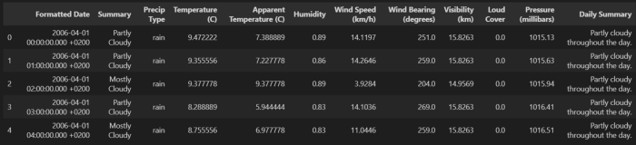
Dimensions of the dataframe refers to the overall data sample, i.e, the total number of rows and columns in the data. It can be obtained using data.shape function as follows
data.shape
The total number of rows and columns in the data set is 96453 and 12 respectively.
To find out the types and overall summary of the data frame, we use the data.info() function. It comes in handy when doing exploratory analysis of the data.
data.info()
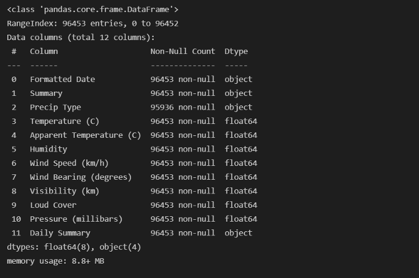
We can use the describe() function to get the descriptive statistical details of the data-frame.
data.describe()
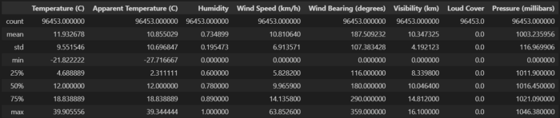
To check the distinct elements in the data frame, we can use the nunique() function.
data.nunique()
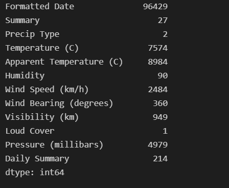
We can check for any missing values using the isnull() function. since having a large dataset, we can incorporate sum() function to get the total number of missing value in each columns.
data.isnull().sum()
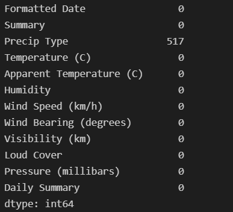
Till now, we had got up many details about the dataset we are working on. Lets take it into account.
Observations:
- In ‘Precip Type’, there are 517 missing values.
- ‘Wind Bearing (degrees)’ has only integer values.
- Formatted Date is in String.
- Minimum values of Humidity, Wind Speed (km/h), Wind Bearing (degrees), Visibility (km) are Zero and they can be Zero.
- From Statistical details and Distinct Elements in Dataframe, It is noticed that ’Loud Cover’ are zero or null.
We can remove the unwanted columns which don’t add value to the analysis using the drop() function. We will drop ‘Loud Cover’ as it has one unique value 0 and it is not useful in analysis.
data = data.drop([‘Loud Cover’], axis = 1)
Correlation of the Columns:
Correlation matrices are an essential tool of exploratory data analysis. We can display the pairwise correlation using corr() function which creates the correlation matrix between all the features in the dataset. Correlation heatmaps contain the same information in a visually appealing way.
# assign data correlation matrix
relation = data.corr()
# Increase the size of the heatmap
plt.figure(figsize=(10,8))
# Store heatmap object in a variable to easily access it
when you want to include more features and you can set
the annotation parameter to True to display the
correlation values on the heatmap.
sns.heatmap(data=relation)
# Give a title to the heatmap.
plt.title("Correlation of columns in the dataframe")
# save the figure.
plt.savefig('plot1.png', dpi=300, bbox_inches='tight')
plt.show()
Observation:
From the Pairwise correlation chart, we can see that Apparent Temperature and Humidity have a high degree of correlation with each other. So we have a high chance of validating our hypothesis.
We only need 3 columns for checking and validating our task which is data [‘Formatted Date’, ‘Apparent Temperature(c)’, ‘Humidity’]. So, we can ignore other columns and missing values.
Parsing Dates, Creating new dataframe :
Change the ‘Formatted Date’ feature from String to Datetime using the datetime() function.
data[‘Formatted Date’] = pd.to_datetime(data[‘Formatted Date’],utc=True)
We can set “Formatted Date” as an index using the set_index() function which sets the DataFrame index (row labels) using one or more existing columns.
data = data.set_index(“Formatted Date”)
data.info()
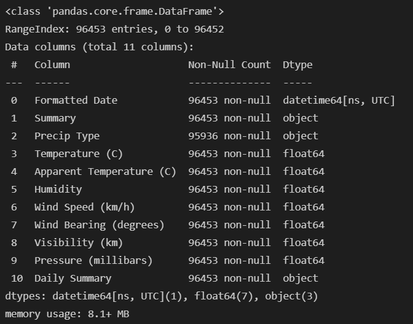
Resampling Data:
Resampling is a convenient method for frequency conversion. The object must have a datetime like an index.
Now, we have hourly data, we need to resample it to monthly. We only require the Apparent Temperature and humidity columns to test the hypothesis. So, we will consider these two columns and perform a resample() function from Pandas.
df_column = ['Apparent Temperature (C)', 'Humidity']
df_monthly_mean = data[df_column].resample("MS").mean()
#MS-Month Starting
df_monthly_mean.head()
Now, we converts hourly data to monthly data using “MS” which denotes the Month starting. We are displaying the average apparent temperature and humidity using the mean() function.

We are done with cleaning and resampling it. Now, Lets begin our analysis.
Relation between Apparent Temperature & Humidity Using Regression:
We can use the regplot() function to plot the relationship between the “Apparent Temperature ” and “Humidity”.
# calling regplot function and assign it with our data and plot labels and color parameter.
sns.regplot(data=df_monthly_mean, x="Apparent Temperature (C)", y="Humidity", color="r")
# Give a title to the plot
plt.title("Relation between Apparent Temperature (C) and Humidity")
# save the figure
plt.savefig('plot2.png', dpi=300, bbox_inches='tight')
plt.show()
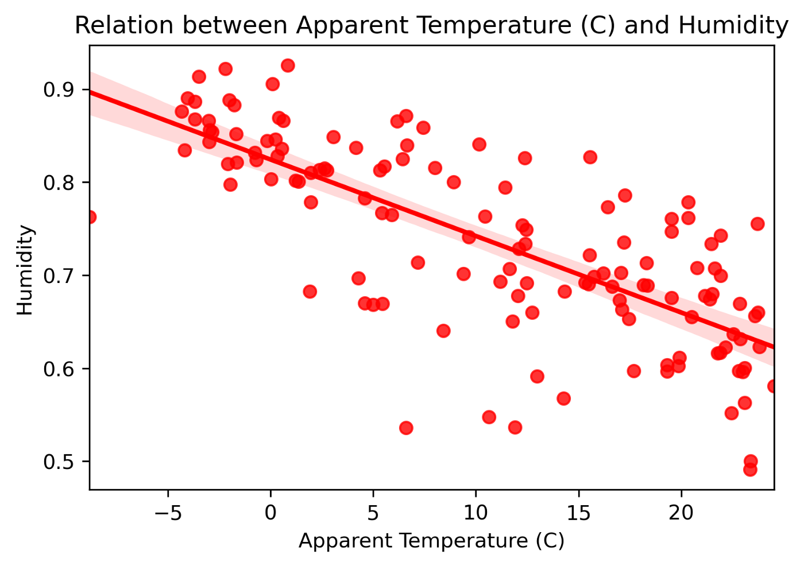
Observation:
There is a Linear Relation between “Apparent Temperature ” and “Humidity” with a negative slope.
As air temperature increases, air can hold more water molecules, and its relative humidity decreases. When temperatures drop, relative humidity increases.
Yearly Variation of Apparent Temperature and Humidity:
We use lineplot() function to plot the Variation of Apparent Temperature and Humidity with time.
plt.figure(figsize=(15,7))
sns.lineplot(data= df_monthly_mean)
plt.xlabel('year')
plt.title('Variation of Apparent Temprature and HUmidity with Time')
plt.savefig('plot3.png', dpi=300, bbox_inches='tight')
plt.show()
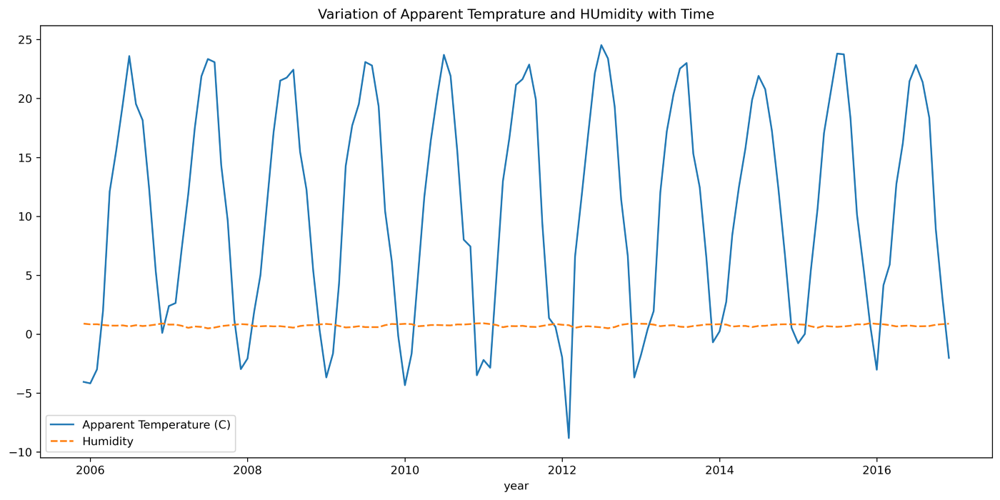
The above graph displays average temperature and humidity for all 12 months over the 10 years i.e., from 2006 to 2016.
Observation:
- “Humidity” remained constant from 2006–2016
- “Apparent Temperature” changed from 2006–2016 at regular intervals with constant amplitude.
Variation of Humidity & Apparent Temperature for all months:
Creating a function which labels each month number with actual month name and a specified color for graph. and defining a seaborn plot() function. This function helps to analyze the variations in Apparent Temperature and Humidity for all months over the 10 years.
# Defining a function call for month to be labeled
def label_color(month):
if month == 1:
return 'January','black'
elif month == 2:
return 'February','brown'
elif month == 3:
return 'March','red'
elif month == 4:
return 'April','orange'
elif month == 5:
return 'May','yellow'
elif month == 6:
return 'June','blue'
elif month == 7:
return 'July','violet'
elif month == 8:
return 'August','pink'
elif month == 9:
return 'September','grey'
elif month == 10:
return 'October','pink'
elif month == 11:
return 'November','purple'
else:
return 'December','green'
# Assigning variables to resampled data
TEMP_DATA = df_monthly_mean.iloc[:,0]
HUM_DATA = df_monthly_mean.iloc[:,1]
def plot_month(month, data):
label, color = label_color(month)
mdata = data[data.index.month == month]
sns.lineplot(data=mdata,label=label,color=color,marker='o')
def sns_plot(title, data):
plt.figure(figsize=(14,8))
plt.title(title)
plt.xlabel('YEAR')
for i in range(1,13):
plot_month(i,data)
plt.savefig('plot4.png', dpi=300, bbox_inches='tight')
plt.show()
# Month-wise Plot for Apparent Temperature of 10 years
title = 'Month-wise Plot for Apparent Temperature of 10 years'
sns_plot(title, TEMP_DATA)
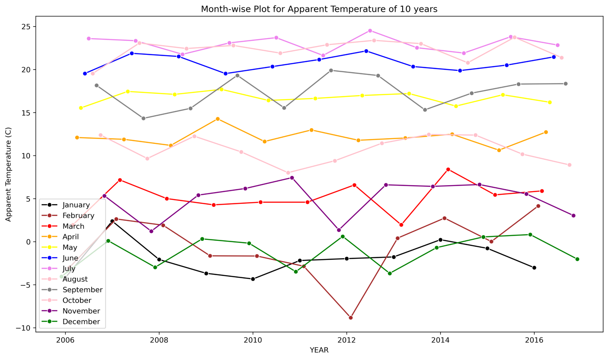 This graph shows the changes in Temperature for each month from 2006 to 2016.
# Month-wise Plot for Humidity of 10 years
title = 'Month-wise Plot for Humidity of 10 years'
sns_plot(title, HUM_DATA)
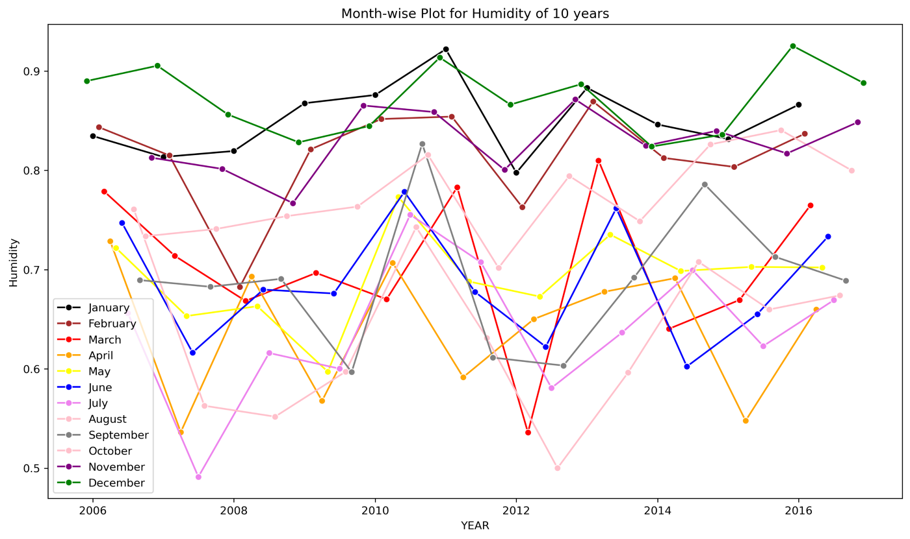
This graph shows the changes in Humidity for each month from 2006 to 2016.
Variation of Humidity & Apparent Temperature for each months:
Creating a function that helps to analyze the variations in Apparent Temperature and Humidity for each month over the 10 years.
# Function for plotting variation for each month
def sns_month_plot(month):
plt.figure(figsize=(15,7))
label = label_color(month)[0]
plt.title('Apparent Temperature Vs Humidity for {}'.format(label))
data = df_monthly_mean[df_monthly_mean.index.month == month]
plt.xlabel('YEAR')
sns.lineplot(data=data, marker='o')
name="month"+str(month)+".png"
plt.savefig(name, dpi=300, bbox_inches='tight')
plt.show()
# Plot for the month of 'January - December'
for month in range(1,13):
sns_month_plot(month)
The graphs below show the variations in Apparent Temperature and Humidity for each month from 2006 to 2016.
January
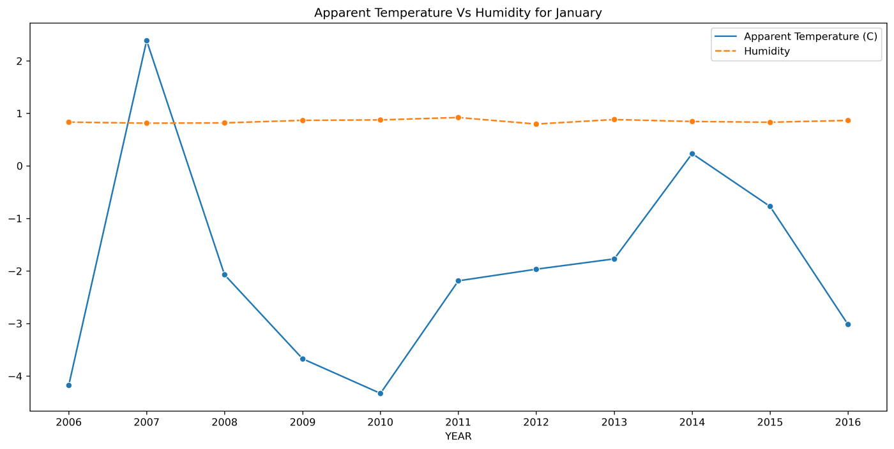
February
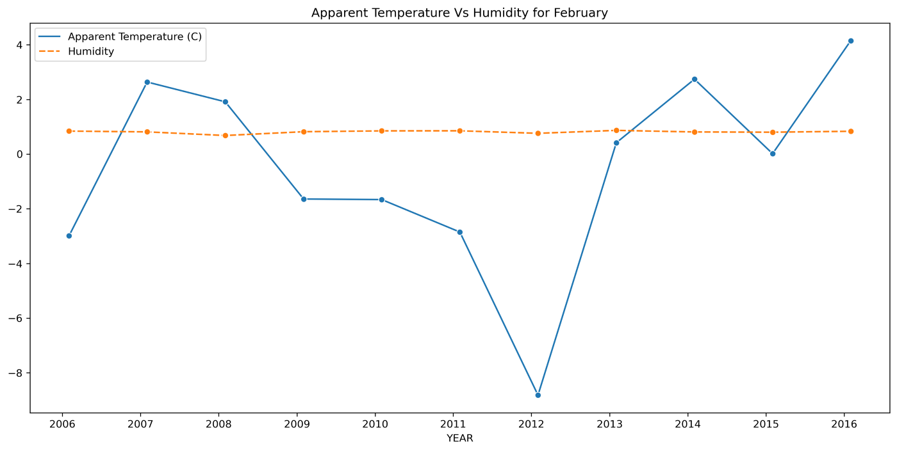
March
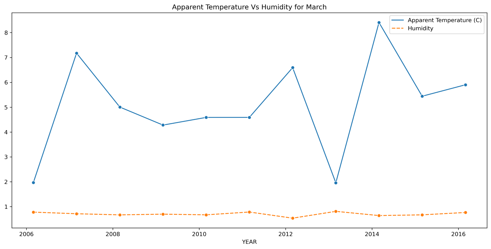
And so on.
Observation:
- As from the above plots, we can understand that, ’The Apparent Temperature’ has a tremendous fluctuation over the time period.
- There is a sharp rise of temperature between year 2008–2009 which again decreases in year 2009–2010.
- It is observed that the average Apparent Temperature is at its peak in year 2009 which further drops to its lowest in year 2015.
- Whereas the average Humidity has remained nearly constant over the period of time.
Conclusion:
From this analysis, We can conclude that the Apparent temperature and humidity compared monthly across 10 years of the data indicate an increase due to Global warming. This clears that our Null Hypothesis is having a True positive impact.
Miscellaneous:
You can do more analysis on the data, the more we question the data, the better we know about it. You can create more and more Hypothesis to verify more about your objective. You can also create a weather prediction model; using this data to train and test your model. It’s all up to you. That is one of the best thing about exploratory data analysis.